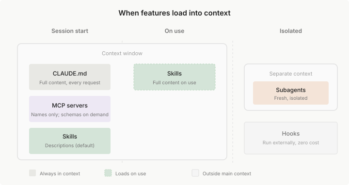

扩展 Claude Code
了解何时使用 CLAUDE.md、Skills、subagents、hooks、MCP 和 plugins。
Claude Code 结合了一个能够推理代码的模型和内置工具，用于文件操作、搜索、执行和网络访问。内置工具涵盖了大多数编码任务。本指南涵盖扩展层：您添加的功能，用于自定义 Claude 的知识、将其连接到外部服务以及自动化工作流。
有关核心代理循环如何工作的信息，请参阅 Claude Code 如何工作。
初次使用 Claude Code？ 从 CLAUDE.md 开始了解项目约定，然后根据需要添加其他扩展当特定触发器出现时。
概述
扩展插入代理循环的不同部分：
- CLAUDE.md 添加 Claude 每个会话都能看到的持久上下文
- 输出样式 为会话中的每个响应设置 Claude 的角色、语气和响应格式
- Skills 添加可重用的知识和可调用的工作流
- 代码智能 将 Claude 连接到语言服务器，用于符号级导航和实时类型错误
- MCP 将 Claude 连接到外部服务和工具
- Subagents 在隔离的上下文中运行自己的循环，返回摘要
- 动态工作流 从 Claude 编写的脚本运行许多 subagents，返回一个结果
- 跨会话消息传递 让 Claude 将消息从您的一个会话传递到另一个会话
- Hooks 在 Claude Code 到达生命周期事件时运行您的脚本、HTTP 请求、MCP 工具调用、提示或 subagent
- Plugins 和 marketplaces 打包和分发这些功能
Skills 是最灵活的扩展。Skill 是一个包含知识、工作流或说明的 markdown 文件。您可以使用 /deploy 之类的命令调用 skills，或者 Claude 可以在相关时自动加载它们。Skills 可以在您当前的对话中运行，也可以通过 subagents 在隔离的上下文中运行。
将功能与您的目标相匹配
功能范围从 Claude 每个会话都能看到的始终开启的上下文，到您或 Claude 可以调用的按需功能，再到在特定事件上运行的后台自动化。下表显示了可用的功能以及何时使用每个功能。
| 功能 | 作用 | 何时使用 | 示例 |
|---|---|---|---|
| CLAUDE.md | 每次对话加载的持久上下文 | 项目约定、"始终执行 X" 规则 | "使用 pnpm，而不是 npm。提交前运行测试。" |
| Output style | 为整个会话设置 Claude 的角色、语气和响应格式的说明 | 您想在每个响应中使用的声音、长度或格式，或 Claude 作为软件工程师以外的角色工作 | 用于较短响应的内置 Concise 风格；一个自定义风格，首先用图表回答每个问题 |
| Skill | Claude 可以使用的说明、知识和工作流 | 可重用内容、参考文档、可重复的任务 | /deploy 运行您的部署清单；包含端点模式的 API 文档 skill |
| Subagent | 返回摘要结果的隔离执行上下文 | 上下文隔离、并行任务、专门的工作者 | 读取许多文件但仅返回关键发现的研究任务 |
| Dynamic workflow | Claude 编写的脚本，在后台运行许多 subagents | 超出少数 subagents 范围的工作，或您想交叉检查的发现 | 审计整个代码库，第二组代理验证每个发现 |
| Cross-session messaging | Claude 将消息从您的一个会话传递到另一个会话 | 您自己运行的需要彼此发现的会话，在任务中途 | 一个会话警告另一个会话，它所做的更改会破坏另一个会话正在构建的内容 |
| Code intelligence | 语言服务器导航和诊断 | 类型化语言、大型代码库（其中 grep 速度慢或不精确） | 跳转到符号的定义，而不是读取整个文件 |
| MCP | 连接到外部服务 | 外部数据或操作 | 查询您的数据库、发布到 Slack、控制浏览器 |
| Hook | 由事件触发的脚本、HTTP 请求、MCP 工具调用、提示或 subagent | 必须在每个匹配事件上运行的自动化 | 每次文件编辑后运行 ESLint |
| Artifact | 将会话输出发布为私有、交互式网页 | 您想以视觉方式查看或共享的输出，而不是作为终端文本 | 一个在 Claude 调查时更新的事件时间线 |
Plugins 是打包层。Plugin 将 skills、hooks、subagents 和 MCP servers 捆绑到单个可安装单元中。Plugin skills 是命名空间的（如 /my-plugin:review），因此多个 plugins 可以共存。当您想在多个存储库中重用相同的设置或通过 marketplace 分发给他人时，使用 plugins。
随时间推移构建您的设置
您不需要提前配置所有内容。每个功能都有一个可识别的触发器，大多数团队大致按以下顺序添加它们：
| 触发器 | 添加 |
|---|---|
| Claude 两次出错约定或命令 | 将其添加到 CLAUDE.md |
| 您一直在要求 Claude 更简洁、解释更多或以相同格式回答 | 设置 output style |
| 您一直在输入相同的提示来启动任务 | 将其保存为用户可调用的 skill |
| 您第三次将相同的剧本或多步骤过程粘贴到聊天中 | 将其捕获为 skill |
| 您一直在从 Claude 看不到的浏览器标签页复制数据 | 将该系统连接为 MCP server |
| Claude 读取许多文件以查找符号的定义或使用位置 | 为您的语言安装 code intelligence plugin |
| 一个辅助任务用您不会再次引用的输出淹没您的对话 | 通过 subagent 路由它 |
| 您希望每次都发生某事而无需询问 | 编写 hook |
| 第二个存储库需要相同的设置 | 将其打包为 plugin |
相同的触发器告诉您何时更新您已有的内容。重复的错误或反复出现的审查评论是 CLAUDE.md 编辑，而不是聊天中的一次性更正。您一直手动调整的工作流是需要另一次修订的 skill。
比较相似的功能
某些功能可能看起来相似。有关选择它们之间的更深入演练，请参阅博客上的 Steering Claude Code: when to use CLAUDE.md, skills, hooks, and subagents。以下是如何区分它们。
[tab] Skill vs Subagent
Skills 和 subagents 解决不同的问题：
- Skills 是可重用的内容，您可以将其加载到任何上下文中
- Subagents 是与您的主对话分开运行的隔离工作者
方面 Skill Subagent 它是什么 可重用的说明、知识或工作流 具有自己上下文的隔离工作者 关键优势 在上下文之间共享内容 上下文隔离。工作单独进行，仅返回摘要 上下文窗口影响 添加到您的主窗口 使用具有自己输入和输出令牌的单独窗口 最适合 参考材料、可调用的工作流 读取许多文件的任务、并行工作、专门的工作者 Skills 可以是参考或操作。 参考 skills 提供 Claude 在整个会话中使用的知识（如您的 API 风格指南）。操作 skills 告诉 Claude 执行特定操作（如运行您的部署工作流的
/deploy）。当您需要上下文隔离或上下文窗口变满时，使用 subagent。Subagent 可能读取数十个文件或运行广泛的搜索，但您的主对话仅接收摘要。由于 subagent 工作不消耗您的主上下文，当您不需要中间工作保持可见时，这也很有用。自定义 subagents 可以有自己的说明并可以预加载 skills。
它们可以结合。 Subagent 可以预加载特定的 skills（
skills:字段）。Skill 可以使用context: fork在隔离的上下文中运行。有关详细信息，请参阅 Skills。[tab] CLAUDE.md vs Skill
两者都存储说明，但它们的加载方式和用途不同。
方面 CLAUDE.md Skill 加载 每个会话，自动 按需 可以包含文件 是，使用 @path导入是，使用 @path导入可以触发工作流 否 是，使用 /<name>最适合 "始终执行 X" 规则 参考材料、可调用的工作流 如果 Claude 应该始终知道它，请将其放在 CLAUDE.md 中：编码约定、构建命令、项目结构、"永远不要执行 X" 规则。
如果它是 Claude 有时需要的参考材料（API 文档、风格指南）或您使用
/<name>触发的工作流（部署、审查、发布），请将其放在 skill 中。经验法则： 保持 CLAUDE.md 在 200 行以下。如果它在增长，将参考内容移到 skills 或拆分为
.claude/rules/文件。[tab] CLAUDE.md vs Output style
两者都给 Claude 常设说明。CLAUDE.md 包含 Claude 应该知道的内容，output style 设置 Claude 如何响应。
方面 CLAUDE.md Output style 包含 关于您的项目的事实和规则 角色、语气和响应格式 切换 始终加载 一次一个活跃；随时切换风格 最适合 构建命令、约定、"永远不要执行 X" 规则 更短的响应、代码旁边的解释、非工程角色 如果它对项目为真，无论您使用什么风格，请将其放在 CLAUDE.md 中：编码约定、构建命令、项目结构。
如果它关于响应本身，您可能想再次关闭它，请使用 output style：长度、格式、Claude 解释多少，或不同的角色，如写作助手。Claude Code 包括 内置风格，您可以编写自己的。
它们结合。 CLAUDE.md 保持加载，无论您选择什么风格。Claude 遵循两者作为说明，所以都不是强制执行的。对于必须每次都发生的任何事情，使用 hook。
[tab] CLAUDE.md vs Rules vs Skills
所有三者都存储说明，但它们的加载方式不同：
方面 CLAUDE.md .claude/rules/Skill 加载 每个会话 每个会话，或当打开匹配的文件时 按需，当调用或相关时 范围 整个项目 可以限定到文件路径 特定于任务 最适合 核心约定和构建命令 特定于语言或目录的指南 参考材料、可重复的工作流 对于每个会话需要的说明，使用 CLAUDE.md：构建命令、测试约定、项目架构。
使用 rules 来保持 CLAUDE.md 专注。 带有
pathsfrontmatter 的 rules 仅在 Claude 处理匹配文件时加载，节省上下文。对于 Claude 有时只需要的内容，使用 skills，如 API 文档或您使用
/<name>触发的部署清单。[tab] Subagent vs Dynamic workflow
两者都在您的主对话之外进行工作。使用 subagents，Claude 逐轮决定接下来运行什么。在工作流中，脚本决定：
- Subagents 是 Claude 生成的工作者，每个都向生成它的对话返回摘要
- Dynamic workflows 是 Claude 编写的脚本，在后台运行许多 subagents 并返回一个结果
当您需要一个快速、专注的工作者时，使用子代理：研究一个问题、验证一个声明、审查一个文件。子代理完成工作并返回摘要，所以您的主对话保持清洁。Claude 在生成时命名的子代理也可以 相互发送消息。
当一个工作超出少数 subagents 的范围时，或当您想在看到发现之前交叉检查它们时，使用 dynamic workflow，例如代码库范围的审计、大型迁移或从多个角度起草的计划。要启动一个，在您的提示中要求一个工作流。
要将一个发现从您的一个会话传递到另一个会话，要求第一个会话的 Claude 发送它。Claude 使用 cross-session messaging 传递它。并行运行代理 比较了运行多个 Claude 的其他方式，包括您交接并稍后检查的会话。
[tab] MCP vs Skill
MCP 将 Claude 连接到外部服务。Skills 扩展 Claude 的知识，包括如何有效地使用这些服务。
方面 MCP Skill 它是什么 连接到外部服务的协议 知识、工作流和参考材料 提供 工具和数据访问 知识、工作流、参考材料 示例 Slack 集成、数据库查询、浏览器控制 代码审查清单、部署工作流、API 风格指南 这些解决不同的问题，可以很好地协同工作：
MCP 给予 Claude 与外部系统交互的目的构建的工具，连接和身份验证由服务器处理。
Skills 给予 Claude 关于如何有效使用这些工具的知识，以及您可以使用
/<name>触发的工作流。Skill 可能包括您团队的数据库架构和查询模式，或带有您团队消息格式规则的/post-to-slack工作流。[tab] Hook vs Skill
Claude Code 在生命周期事件上运行 hook；它将 skill 加载到上下文中供 Claude 应用。
方面 Hook Skill 运行 Shell 命令、HTTP 请求、MCP 工具调用、LLM 提示或 subagent Claude 读取和遵循的说明 由以下触发 生命周期事件，如 PostToolUse或SessionStart您输入 /<name>，或 Claude 将描述与您的任务相匹配确定性 在其事件上触发，无需 Claude 决定 Claude 解释说明；结果可能会有所不同 上下文成本 零，除非 hook 返回输出 描述在每个会话加载；使用时加载完整内容 最适合 编辑后运行 linting、阻止不安全的命令、记录日志、发送通知 需要推理的工作流、参考材料、多步骤任务 当操作必须每次都以相同方式发生且不需要 Claude 思考时，使用 hook。例如：保存时格式化、拒绝
rm -rf /、在会话结束时发布 Slack 消息。当 Claude 应该决定如何应用步骤或内容是知识而不是脚本时，使用 skill。例如：
/release清单、您的 API 风格指南、调试剧本。将护栏放在 hooks 中。 CLAUDE.md 或 skill 中的"永远不要编辑
.env"之类的说明是请求，而不是保证。阻止编辑的PreToolUsehook 是强制执行。如果规则必须每次都成立，将其作为 hook 而不是提示说明。Hook 输出进入上下文。 运行您的 linter 的
PostToolUsehook 将结果作为 Claude 读取的文本反馈；/fix-lintskill 告诉 Claude 如何解决它们。
了解功能如何分层
功能可以在多个级别定义：用户范围、每个项目、通过 plugins 或通过托管策略。您还可以在子目录中嵌套 CLAUDE.md 文件或在 monorepo 的特定包中放置 skills。当相同的功能存在于多个级别时，以下是它们的分层方式：
- CLAUDE.md 文件 是累加的：所有级别同时向 Claude 的上下文贡献内容。来自您的工作目录及以上的文件在启动时加载；子目录在您在其中工作时加载。当说明冲突时，Claude 使用判断来协调它们。有关详细信息，请参阅 CLAUDE.md 文件如何加载。
- Skills 和 subagents 按名称覆盖：当相同的名称存在于多个级别时，一个定义根据优先级获胜（对于 skills 为托管 > 用户 > 项目；对于 subagents 为托管 > CLI 标志 > 项目 > 用户 > plugin）。Plugin skills 是 命名空间的 以避免冲突。有关详细信息，请参阅 skill 发现 和 subagent 范围。
- MCP 服务器 按名称覆盖：本地 > 项目 > 用户。有关详细信息，请参阅 MCP 范围。
- Hooks 合并：所有注册的 hooks 为其匹配的事件触发，无论来源如何。有关详细信息，请参阅 hooks。
组合功能
每个扩展解决不同的问题：CLAUDE.md 处理始终开启的上下文，skills 处理按需知识和工作流，MCP 处理外部连接，subagents 处理隔离，hooks 处理自动化。真实的设置根据您的工作流组合它们。
例如，您可能使用 CLAUDE.md 处理项目约定、使用 skill 处理部署工作流、使用 MCP 连接到数据库、使用 hook 在每次编辑后运行 linting。每个功能处理它最擅长的事情。
| 模式 | 工作原理 | 示例 |
|---|---|---|
| Skill + MCP | MCP 提供连接；skill 教导 Claude 如何很好地使用它 | MCP 连接到您的数据库，skill 记录您的架构和查询模式 |
| Skill + Subagent | Skill 为并行工作生成 subagents | /audit skill 启动在隔离上下文中工作的安全性、性能和风格 subagents |
| CLAUDE.md + Skills | CLAUDE.md 保存始终开启的规则；skills 保存按需加载的参考材料 | CLAUDE.md 说"遵循我们的 API 约定"，skill 包含完整的 API 风格指南 |
| Hook + MCP | Hook 通过 MCP 触发外部操作 | 编辑后 hook 在 Claude 修改关键文件时发送 Slack 通知 |
了解上下文成本
您添加的每个功能都会消耗 Claude 的一些上下文。太多可能会填满您的上下文窗口，但它也可能增加噪音，使 Claude 效率降低；skills 可能无法正确触发，或 Claude 可能会失去对您的约定的跟踪。了解这些权衡有助于您构建有效的设置。有关这些功能如何在运行会话中组合的交互式视图，请参阅 探索上下文窗口。
按功能的上下文成本
每个功能都有不同的加载策略和上下文成本：
| 功能 | 何时加载 | 加载内容 | 上下文成本 |
|---|---|---|---|
| CLAUDE.md | 会话开始 | 在会话开始时加载的每个文件的完整内容 | 每个请求 |
| Output styles | 会话开始，以及当您切换样式时再次加载 | 活跃样式的完整说明；默认样式无内容 | 每个请求 |
| Skills | 会话开始 + 使用时 | 启动时的描述，使用时的完整内容 | 低（每个请求的描述）* |
| MCP 服务器 | 会话开始 | 工具名称；完整架构按需 | 低，直到使用工具 |
| Code intelligence | 文件编辑后和按需 | 编辑后的诊断；符号查找时的位置信息 | 低；减少其他地方的文件读取 |
| Subagents | 生成时 | 具有指定 skills 的新鲜上下文，或用于 fork 的父对话 | 与主会话隔离 |
| Hooks | 触发时 | 无（外部运行） | 零，除非 hook 返回额外上下文 |
*在 skill 的 frontmatter 中设置 disable-model-invocation: true，可使其描述不进入 Claude 的上下文。对于您未编写的 skill，在设置中设置 skillOverrides 以在不编辑其文件的情况下执行相同操作。
了解功能如何加载
每个功能在会话的不同点加载。下面的选项卡解释了每个功能何时加载以及什么进入上下文。

[tab] CLAUDE.md
何时： 会话开始
加载内容： 在会话开始时加载的每个 CLAUDE.md 文件的完整内容（托管、用户和项目级别）。
继承： Claude 从您的工作目录读取 CLAUDE.md 文件直到根目录，并在访问这些文件时发现子目录中的嵌套文件。有关详细信息，请参阅 CLAUDE.md 文件如何加载。如果嵌套的 CLAUDE.md 超出其单文件大小限制，Claude 只会收到该文件的开头部分。
[!TIP]
保持 CLAUDE.md 在 200 行以下。将参考材料移到 skills，这些 skills 按需加载。要获取 已检入 CLAUDE.md 的修剪建议，请运行
/doctor。[tab] Skills
Skills 是 Claude 工具包中的额外功能。它们可以是参考材料（如 API 风格指南）或可调用的工作流，您可以使用
/<name>触发（如/deploy）。Claude Code 包括 捆绑的 skills，如/code-review、/batch和/debug，可以开箱即用。您也可以创建自己的。何时： 取决于 skill 的配置。默认情况下，描述在会话开始时加载，完整内容在使用时加载。对于仅用户 skills（
disable-model-invocation: true），在您调用它们之前不加载任何内容。加载内容： 对于模型可调用的 skills，Claude 在每个请求中看到名称和描述。当您使用
/<name>调用 skill 或 Claude 自动加载它时，完整内容加载到您的对话中。Claude 如何选择 skill： Claude 将您的任务与 skill 描述相匹配，以决定哪些相关。如果描述模糊或重叠，Claude 可能加载错误的 skill 或错过会有帮助的 skill。要告诉 Claude 使用特定的 skill，请使用
/<name>调用它。上下文成本： 低，直到使用。仅用户 skills 在调用前成本为零。
在子代理中： 子代理的
skills字段中列出的 skill 的完整内容会在启动时加载到其上下文中，而不是按需加载。子代理仍然可以通过 Skill 工具发现和调用未列出的项目、用户和插件 skill。[!TIP]
对于有副作用的 skill，使用
disable-model-invocation: true。这节省上下文并确保它们仅在您指名时运行。[tab] MCP 服务器
何时： 会话开始。
加载内容： 来自连接的服务器的工具名称和服务器说明。完整的 JSON 架构保持延迟，直到 Claude 需要特定工具。
上下文成本： 工具搜索默认启用，因此空闲 MCP 工具消耗最少的上下文。
[!TIP]
运行
/mcp查看每个服务器的连接状态。运行/context all查看每个加载的 MCP 工具使用多少令牌。Claude Code 自动重新连接到远程服务器（如果它们断开连接），您可以断开您未主动使用的服务器。[tab] Code intelligence
何时： 文件编辑后，以及当 Claude 导航代码时按需。
加载内容： 每次文件编辑后的类型错误和警告。当 Claude 查找符号时的定义、引用和类型信息。
上下文成本： 低。符号查找通常替代广泛的文件读取，因此净上下文使用可能会下降。
[!TIP]
LSP 工具在您为您的语言安装 code intelligence 插件 之前处于非活动状态。
[tab] Subagents
何时： 按需，当您或 Claude 为任务生成一个时。
加载内容： 新鲜、隔离的上下文，包含：
- Agent 自己的系统提示词，而不是 Claude Code 系统提示词
- Agent 的
skills:字段中列出的 skill 的完整内容- CLAUDE.md 和 git 状态。内置的 Explore 和 Plan Agent 启动时两者都不包含，而定义中设置了
omitClaudeMd的 Agent 启动时不包含用户、项目和本地 CLAUDE.md 文件。- 主 Agent 在提示词中传递的任何上下文
对于 fork，Claude Code 改为加载父对话到目前为止的内容、系统提示和工具。
上下文成本： 与主会话隔离。
[!TIP]
对于不需要您完整对话上下文的工作，使用 subagents。它们的隔离防止膨胀您的主会话。
[tab] Hooks
何时： 触发时。Claude Code 在特定的生命周期事件上运行 hooks，如工具执行、会话边界、提示提交、权限请求和压缩。有关完整列表，请参阅 Hooks。
加载内容： 默认情况下无。Hooks 在主对话外执行。
上下文成本： 零，除非 hook 返回作为消息添加到您的对话中的输出。
[!TIP]
Hooks 非常适合不需要影响 Claude 上下文的副作用（linting、logging）。
了解更多
每个功能都有自己的指南，包含设置说明、示例和配置选项。
[card] CLAUDE.md
存储项目上下文、约定和说明
[card] Skills
给予 Claude 领域专业知识和可重用的工作流
[card] Subagents
将工作卸载到隔离的上下文
[card] Dynamic workflows
从一个脚本运行许多 subagents
[card] Cross-session messaging
让 Claude 向您的其他会话发送消息
[card] MCP
将 Claude 连接到外部服务
[card] Hooks
使用 hooks 自动化操作
[card] Plugins
捆绑和共享功能集
[card] Marketplaces
托管和分发 plugin 集合